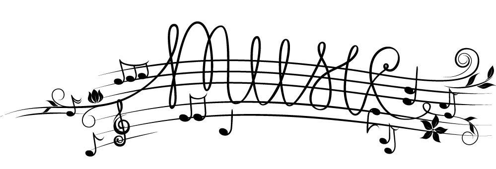

MUSIC SCHOOL
This is a small guide so that before starting a musical course, you will know the most important characteristics of some of the instruments that we select, so that you can choose the one that best suits you.
PIANO

It is made up of a resonance box to which a keyboard has been added through which the steel strings are percussed with felt-lined hammers, producing the sound. The vibrations are transmitted through the bridges to the harmonic table, which amplifies.
In Western music, the piano can be used for solo performance, for chamber music, for accompaniment, to help compose, and for rehearsal.
- Figures such as:
- Frédéric Chopin
- Wolfgang Amadeus Mozart
- Ludwig van Beethoven
- Franz Liszt
- Claude Debussy
- Piotr Ilich Chaikovski
Many works, famous in their version for orchestra, have been initially written for the piano. Some examples are the Hungarian Dances by Johannes Brahms, Pictures at an Exhibition by Modest Mussorgsky, Gymnopedias by Erik Satie or A Song of Spring by Felix Mendelssohn-Bartholdy.
Conversely, many works from the classical repertoire have been transcribed for the piano, such as Franz Liszt's transcriptions of Ludwig van Beethoven's symphonies or fantasies on opera themes. The piano is widely used in music to accompany the voice in choirs, lieder and melodies. It is also used in chamber music, in duet with another instrument, which is usually the violin or flute, in trios, quartets or quintets with piano.
The piano is the pedagogical instrument par excellence because it is a polyphonic, polyrhythmic and simple-to-use instrument, relatively cheap and quite loud. For this reason, it is used in most solfeggio classes in music schools and conservatories as the main instrument of the pedagogue.
GUITAR
It is a plucked string musical instrument, composed of a resonance box, a neck on which the fingerboard or fretboard is attached generally with an acoustic hole in the center of the top (mouth)— and six strings. The frets are embedded on the fretboard, which allow dividing the continuum of sounds into the 12 notes of the tonal system, making it possible to interpret them more easily.
The guitar is today a multifaceted instrument that is used both in classical music and in popular music. In its electrified version it is the most used instrument in genres such as blues, rock and heavy metal. It is also the protagonist in the popular roots music of Spain and Latin America.
- Figures such as:
- Jimmy Hendrix
- Eric Clapton
- Jimmy Page
- Robert Johnson
- Chuck Berry
- Carlos Santana
TRUMPET
The trumpet is a wind musical instrument, which belongs to the family of brass or metal wind instruments, made of metal alloy. The sound is produced thanks to the vibration of the performer's lips in the part called mouthpiece from the air column
- Types of trumpets:
- Trumpet in C or B♭
- Trumpet of staves
- Piccolo trumpet
- Bass Trumpet
- Pocket trumpet
- Trumpet of keys
VIOLIN
Of the family of bowed strings, it is the smallest and sharpest of its kind, consisting of a figure-8 soundboard, a fretless neck, and four strings that are plucked with a bow.
In the old violins, the strings were made of gut. Today they can also be made of metal or gut wound with aluminium, silver or steel; the string in me, the sharpest - called cantino - is directly a steel thread, and, occasionally, gold. Strings are currently being manufactured from synthetic materials that tend to combine the sonority achieved by the flexibility of the gut and the resistance of the metals.
- Some violin pieces:
- Bach - Partita No. 2, Chaconne
- Bartok - Violin Concerto No. 2
- Amy Beach – Violin Sonata
- Beethoven - Violin Sonata No. 9
- Berg - Violin Concerto
- Biber - Mystery Sonatas
DRUMS

The battery is a set of percussion musical instruments used by many musical groups.
Percussion instruments are considered the oldest of musical instruments along with wind or harmonic instruments. The origin of the battery is located in the United States at the end of the 19th century and lies in the union, in 1890, of a few instruments that were played separately until now: the snare drum, the bass drum and the cymbals, popularized by the European music but all of Turkish origin.
Music literacy
Staff: The set of 5 parallel lines and 4 spaces, where the sounds are located, their location in it determines their height, arranged in the order as shown in the figure, is called a natural or diatonic scale.Compass: The space located between two division lines is called compass, its duration is determined by the fraction that complements the first one.Key: Determines where the notes and their names are located, in this case the note is G because the key begins on the second line.Values: Due to the fact that the sounds vary in duration, a mathematical relationship between them is established for their use in musical writing.Notes:Musical notes are used in musical notation to represent the height and relative duration of a sound, often using the meaning "musical figure".